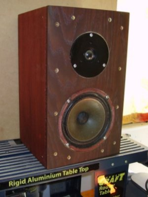
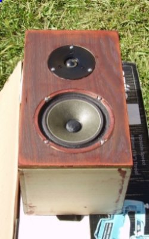
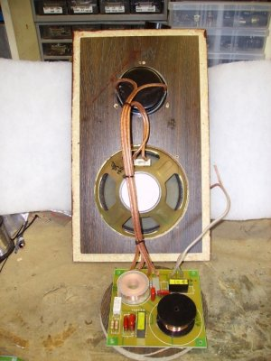
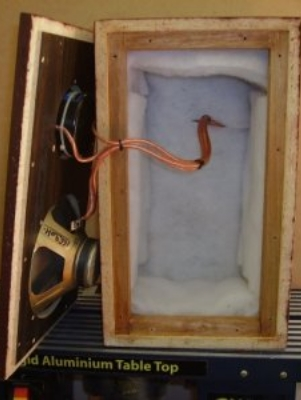
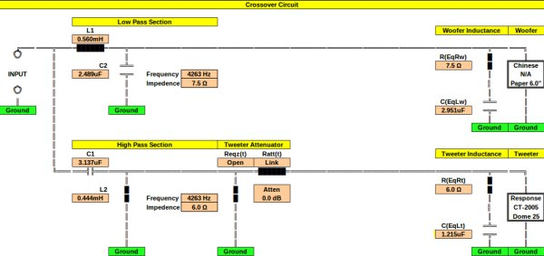

|
NAVIGATION
TOP of Page
MAIN Page
HOME Page
LEWIS STANDMNT
About the Speaker
Speaker Design
Listening Tests
Specifications
Crossover Network
|
About the Loudspeaker
|

Finished Speaker
|

Speaker being Stained
|
The Lewis Standmount Loudspeaker is a compact two way bass reflex standmount loudspeaker,
built to consume a stock of spare parts, but producing reasonably good performance.
TOP
MAIN
HOME
Designing and Building the Loudspeaker
This loudspeaker began life as a collection of spare bits left over from the disassembly of other speaker sets.
The cabinets were already built for another unfinished project. The internal cabinet dimensions were 250mm high,
185mm wide and 215mm deep. Note wall thickness adds to the external dimensions. I tried the woofers in the cabinet
and was pleased with the performance, so I decided to create a complete speaker system.
The cabinet is about 10 litres volume. No attempt was made to match the drivers Thiele/Small parameters to the case.
The baffle is a piece of 18mm pine, with the speaker mounting holes cut using a router circle cutter. The baffle and
the bare cabinet walls had no veneer applied and were rubbed down to be stained a convenient brown colour. The bass
driver was sealed with speaker sealant (Jaycar CF-2762) to prevent leakage, while the tweeter was intimately mounted
on the flat cutout produced by a circle cutting router, with the notches for the tweeter terminals cut by a jigsaw.
The bass driver is a no name 6.5" Chinese driver with a medium sized magnet and a cloth semicircular suspension. The cone
was doped with Aquadhere PVA to improve the midrange performance. The tweeter is an inexpensive Jaycar CT-2005 25mm 20W
Dome. The crossover network is a 12dB/octave Linkwitz-Riley at about 3500Hz, with driver voice coil impedence correction.
The network was built on a Jaycar CX-2605 Crossover PCB with Jaycar PT-3006 speaker terminals.
The crossover network is placed on the back of the enclosure, mounted on two wooden rails, which spaces the underneath
soldered joints away from the internal wall and adds rigidity to the enclosure. Note the solidity of the cabling between
the crossover and drivers. The cabinet was then lined with insulwool and stained.
The speaker was finished with the application of a grille and grille cloth. The grille is a 1/4" fibre board sheet, cut
out with circular holes for each driver and close mounted to the baffle on four speaker grille clips (Jaycar CF-2761).
The grille cloth (Jaycar CF-2752) is acoustically transparent and glued plus stapled to the rear of the grille.
|

Drivers and Crossover
|

Crossover behind Insulwool
|
TOP
MAIN
HOME
Listening to the Loudspeaker
Be under no illusion that these are clinically accurate monitors. They were designed to a price (low) and perform admirably
at their price point. The speakers were set up in the lounge room for listening tests with the first thing being noted
the early rollof in the deep bass, with a slight presence in the upper bass. There is also a reasonably defined midrange
and clear treble. As a comparison, I would rate them with better accuracy than the mass produced Asian speakers attached
to current multimedia systems, and more in line acoustically with the slight warmth of the American 'West Coast' sound.
They would be ideal for their intended use of filling a small lounge room in a flat with rock music. Without having a deep
bass, they are capable speakers without the thumping performance that annoys neighbours. The speaker was given as a present
to my nephew Lewis, along with a Sony 80w/chan 5.1 channel tuner amp and a CD player. I hope he looks after them and
appreciates the work that went into building them.
TOP
MAIN
HOME
Loudspeaker Specifications
|
Specifications :
|
Two Way Acoustic Suspension Stand Mount
|
|
Bass Enclosure :
|
Approx 10L Lined
|
|
Freq. Response :
|
105hz-20,000hz at -3dB
|
|
Efficiency :
|
88dB at 1W at 1 metre
|
|
Impedence :
|
7.5ohms typical, 6.0 ohms minimum
|
|
Power Handling :
|
20W rms
|
|
Crossover :
|
4,260hz 2nd Order Linkwitz Network
|
|
Imp. Correction :
|
Woofer and Tweeter
|
|
Bass Driver :
|
Chinese 'No Name' 165mm Bass/Mid Paper cone
|
|
Tweeter Driver :
|
Response 25mm dome (Jaycar CT-2005)
|
TOP
MAIN
HOME
Crossover Network
 Circuit for the Crossover Network
TOP
MAIN
HOME
|